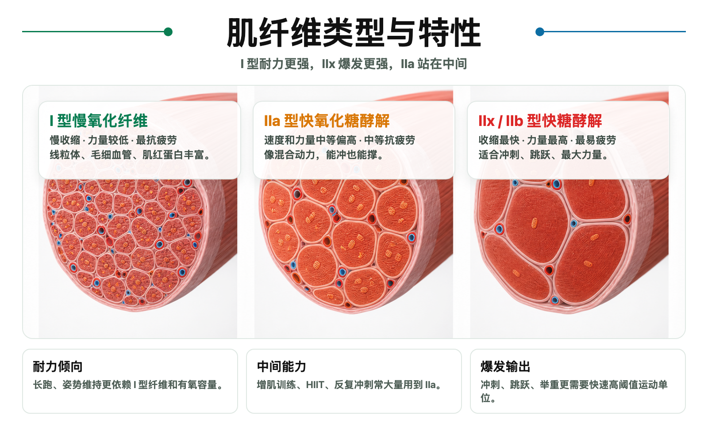

Day 9 · 肌纤维类型与特性
一句话总结
肌纤维像不同型号发动机: I 型慢但省油，IIx 型快但耗油，IIa 型站中间。训练能改变它们的表现和部分 II 型亚型比例，但不要把 IIa 直接说成训练成 I 型。

核心要点
-
肌纤维类型: 主要看收缩速度、产力能力、疲劳速度和供能偏好。
底层机制
骨骼肌不是一整块同质材料，而是许多肌纤维混合组成。考试常按 I 型、IIa 型、IIx/IIb 型比较。人类常用 IIx 表述，IIb 多见于动物或教材旧表述。
大白话I 型像长跑车经济模式，速度不炸但能跑很久；IIx 像冲刺模式，瞬间推背感强但掉速快；IIa 像运动模式，能冲也能撑一阵。
训练含义轻重量多次数更依赖抗疲劳能力；大重量单次更依赖快速高力输出。肌纤维类型解释为什么训练目标不同，强度、次数和休息也不同。
-
I 型慢氧化纤维: 慢收缩、低力量、抗疲劳，适合长时间稳定输出。
字面意思
I 型慢氧化纤维 = slow oxidative fiber。慢，是收缩速度慢；氧化，是主要靠有氧代谢产 ATP。ATP 是三磷酸腺苷，肌肉直接使用的能量货币。
结构特点线粒体多、毛细血管多、肌红蛋白多，所以更适合用氧气长期供能。姿势肌和小腿比目鱼肌通常 I 型比例较高，因为它们常年负责站立抗重力。
真实例子马拉松、长时间骑行、低强度稳定有氧更依赖 I 型纤维。I 型也能产生张力，只是最大力量和爆发速度不如 II 型。
-
IIa 型快氧化糖酵解纤维: 速度和力量中等偏高，抗疲劳能力也比 IIx 好。
字面意思
IIa 型 = fast oxidative glycolytic fiber。fast 表示收缩更快；oxidative 表示能用氧化供能；glycolytic 表示也能靠糖酵解快速供能。
大白话IIa 像混合动力发动机: 既能短时间加速，也能比纯爆发纤维撑得更久。它是力量耐力、间歇训练和中高次数抗阻训练的重要纤维。
训练例子8-12 次较重训练、400 米跑、反复冲刺、HIIT 都会大量用到 IIa。它不是最慢，也不是最爆，但在又要快又要撑时很关键。
-
IIx/IIb 型快糖酵解纤维: 收缩最快、力量最高、最容易疲劳，适合极短爆发。
底层机制
IIx/IIb 型 = fast glycolytic fiber。快，是肌球蛋白 ATPase 活性高，横桥循环速度快；糖酵解，是不依赖氧气也能快速再合成 ATP。
大白话它像火箭助推器: 点火很猛，但燃料烧得快。最大力量单次、起跑、跳跃、奥举拉起瞬间，都更需要这类快速高力纤维。
常见误解IIx 多不一定更好。耐力项目过多依赖 IIx 会更快疲劳，技术训练也可能因为过早疲劳变形。
-
结构差异: 线粒体、毛细血管和肌红蛋白越多，越适合耐力。
对比表
考试抓法类型 像什么 速度/力量 疲劳 典型能力 I 型 省油发动机 慢、力量较低 最抗疲劳 长跑、姿势维持 IIa 型 混合动力 快、中高力量 中等抗疲劳 中高强度间歇、增肌训练 IIx 型 火箭助推器 最快、高力量 最易疲劳 冲刺、跳跃、最大力量 看到慢、低力量、抗疲劳、线粒体多、毛细血管多，选 I 型；看到快、高力量、易疲劳、糖酵解强，选 IIx/IIb；看到中间型、兼顾速度和耐力，选 IIa。
-
募集顺序: 小单位先上，大单位后上；不是一开始就全员爆发。
底层机制
大小原则 = Size Principle。低力量需求时先募集小运动单位，通常偏 I 型；力量需求增加时，再募集更大的 II 型运动单位。
训练例子热身空杆深蹲时不用大量 IIx；接近 1RM 或冲刺起跑时，身体才需要高阈值运动单位。疲劳累积时，即使重量不大，也可能为了维持输出募集更多 II 型纤维。
常见误解轻重量不是永远练不到 II 型。轻重量做到接近力竭时，前面纤维疲劳，为维持力量输出也会逐步募集高阈值单位。
-
训练适应: 训练能改变纤维表现和 II 型亚型比例，但 IIa 不会直接变成 I 型。
关键澄清双证考试常考训练转换。严谨说法是 IIx 与 IIa 之间更容易互相转变；耐力训练会让 II 型更有氧化能力，但不要说 IIa 直接变成 I 型。
耐力训练
变化线粒体、毛细血管、氧化酶活性增加，肌肉更会用氧。
力量训练
变化II 型纤维横截面积增大，神经募集更有效，最大力量上升。
长期停训
变化快速纤维能力下降，IIa/IIx 表现可能向更低训练状态回退。
-
项目倾向: 马拉松偏 I 型，举重和短跑偏 II 型，但每个人都是混合体。
真实例子
马拉松运动员通常 I 型比例和有氧能力更突出；举重运动员、短跑运动员通常 II 型比例、神经驱动和快速发力能力更突出。
训练判断想提升耐力，要堆有氧容量、乳酸阈和动作经济性；想提升爆发，要练高速度、高力量、充分休息和技术质量。肌纤维只是解释之一，不是唯一答案。
常见误解遗传有影响，但训练年限、技术、神经适应、心肺能力、体型和恢复也一起决定表现。
常见误区
❌很多人以为 I 型只负责有氧、II 型只负责力量。✅其实所有纤维都能产生张力，只是速度、疲劳和供能偏好不同。
❌很多人以为 IIa 训练久了会变成 I 型。✅更准确是 II 型亚型和代谢特性会改变，IIa 直接变 I 型不是考试应答。
❌很多人以为轻重量一定练不到快肌纤维。✅接近力竭时，小单位疲劳，身体会逐步募集更高阈值运动单位。
记忆口诀
一慢二快，二 a 居中，二 x 最冲；线毛肌红多，耐力撑得久；快糖火力猛，爆发掉得快。
翻转卡复习
实操关联
- 增肌: 用中高张力和接近力竭招募更多纤维，不必迷信某个只练快肌的动作。
- 减脂: I 型纤维参与长时间有氧，但减脂核心仍是能量平衡；训练选择服务于消耗、保肌和可坚持。
- 爆发: 高速度、高意图发力、充分休息，减少疲劳干扰，才能让 II 型纤维输出质量更高。
- 耐力: 稳定有氧、阈值训练和长时间专项练习，提高线粒体、毛细血管和动作经济性。